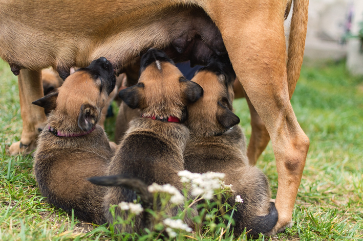

O que são Mamíferos?
Os mamíferos são um grupo de animais vertebrados que possuem características únicas, como a presença de glândulas mamárias para alimentar seus filhotes e pelos em alguma fase da vida. Eles habitam diversos ecossistemas ao redor do mundo e desempenham papéis importantes em sua dinâmica ecológica.
